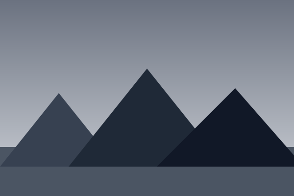

Image Preview
Image Preview provides interactive image inspection features: hover zoom, full-screen lightbox, and before/after comparison sliders.
Hover Zoom
Scale the image on hover for a quick zoom effect. Cursor changes to a magnifier.
HTML
<div class="zak-image-preview zak-image-preview-zoom">
<img src="..." alt="...">
</div>Lightbox Preview
Click an image to open it in a full-screen lightbox overlay. Close with the X button, clicking the backdrop, or pressing Escape.
HTML
<div class="zak-image-preview zak-image-preview-lightbox">
<img src="..." alt="..." data-zak-lightbox>
</div>JS
function openLightbox(bg) {
const overlay = document.getElementById('lightbox-overlay');
overlay.querySelector('.zak-lightbox-img').style.background = bg;
overlay.classList.add('active');
}
function closeLightbox() {
document.getElementById('lightbox-overlay').classList.remove('active');
}
document.addEventListener('keydown', (e) => {
if (e.key === 'Escape') closeLightbox();
});Image Comparison (Before/After)
Drag the slider handle to reveal a before/after comparison of two images.

HTML
<div class="zak-compare" data-zak-compare>
<div class="zak-compare-before">
<img src="before.jpg" alt="Before">
</div>
<div class="zak-compare-after">
<img src="after.jpg" alt="After">
</div>
<div class="zak-compare-handle"></div>
</div>JS
const slider = document.getElementById('compareSlider');
const after = document.getElementById('compareAfter');
const handle = document.getElementById('compareHandle');
const knob = document.getElementById('compareKnob');
let dragging = false;
function setPosition(x) {
const rect = slider.getBoundingClientRect();
let pct = ((x - rect.left) / rect.width) * 100;
pct = Math.max(0, Math.min(100, pct));
after.style.width = pct + '%';
handle.style.left = pct + '%';
knob.style.left = pct + '%';
}
slider.addEventListener('mousedown', () => dragging = true);
document.addEventListener('mouseup', () => dragging = false);
document.addEventListener('mousemove', (e) => {
if (dragging) setPosition(e.clientX);
});
slider.addEventListener('touchstart', () => dragging = true);
document.addEventListener('touchend', () => dragging = false);
document.addEventListener('touchmove', (e) => {
if (dragging) setPosition(e.touches[0].clientX);
});Caption Overlay
Show a caption that fades in on hover.
HTML
<div class="zak-image-preview-caption">
<img src="..." alt="...">
<div class="zak-image-preview-caption-overlay">
<strong>Mountain Lake</strong>
<span>Crystal clear waters at dawn</span>
</div>
</div>CSS Classes Reference
| Class | Description |
|---|---|
.zak-image-preview | Base preview wrapper |
.zak-image-preview-zoom | Hover zoom effect |
.zak-image-preview-lightbox | Lightbox trigger |
.zak-compare | Before/after comparison container |
.zak-compare-before | Before layer |
.zak-compare-after | After layer (clipped) |
.zak-compare-handle | Draggable divider |
.zak-image-preview-caption | Image with hover caption |
.zak-image-preview-caption-overlay | Overlay content on hover |
Accessibility
- Lightbox triggers must be keyboard-accessible: use
role="button",tabindex="0", and listen for Enter/Space. - The lightbox overlay needs
role="dialog",aria-modal="true", and focus trap. - Close button must be the first focusable element inside the lightbox and announce "Close image preview".
- Before/after slider must be operable via keyboard with arrow keys and
role="slider". - Hover-only caption overlays must also work with keyboard focus: use
:focus-withinor:focus-visible.